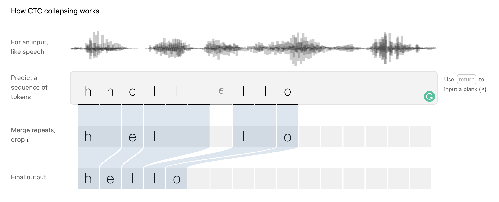
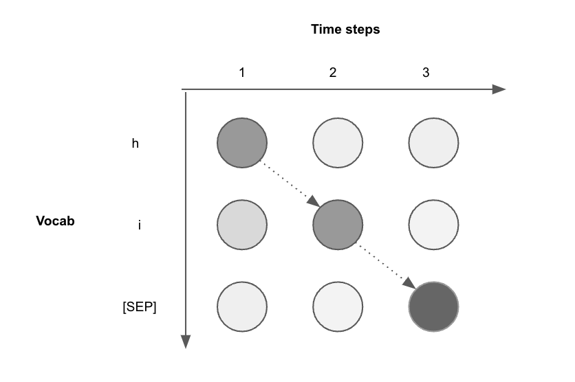

Connectionist Temporal Classification
Introduction
- Connectionist Temporal Classification (CTC) is the algorithm to assign probability score to an output Y given any input X. The main advantage is that the size of X and Y do not have to match!
- This makes CTC an ideal algorithm for use cases like speech recogition and handwriting recoginition where the input and output do not usually match.
- Take the example of speech recognition. The input is usually a waveform of audio that could contains 16,000 samples per second (if sampling rate is 16kHz). But in a second, we hardly speak a word that could be 5-6 characters. So in ASR we are trying to map a large amount of input to much smaller sized output. This is just one of the use cases where CTC shines.

Understanding CTC
- To understand the CTC algorithm, we need to understand three aspects. Let's go through them one by one.
Collapsing
- In ASR, while the output is much smaller, we start with normal classification on the input. For this, we first divide the input into multiple equal sized tokens. For example, we can take 400 samples at a time (for 16kHz sampled audio that is 25ms of speech). Now we need to classify each one of these samples into characters available in the vocabulary. For a normal english language we will have all the alphanumeric characters plus some special tokens (not special characters) as the vocabulary.
Note
In ASR vocab, we do not put any of the special characters for which there is no sound. For example there is no sound for .. But we could identify ' in It's, so it could be there.
- This will give us a long sequence of characters, and this is where collapsing logic of CTC comes into picture. The idea is to combine consecutive repetitive characters together. For example,
hhhhiiiiicould be simply written ashi. - Now we also want to handle two special cases, (1) there could be spaces between two words, (2) there could be multiple repetitive characters in a valid word like double
linhello. For these cases, we can add two special tokens in the vocab, say[BRK]and[SEP]respectively. - So a word like
hellocould be decoded if we get the classification output ashhelll[SEP]llo. This means for a complicated task like ASR, we can continue with a simple classification task at the output layer and later let CTC decoding logic handle the rest. But the next question is, "how can we teach model to predict these outputs?" 🤔
Note
The overall collapsing algorithm is like this -- (1) First, collapse the consecutive characters, (2) Next remove any [SEP] tokens, and (3) Finally replace [BRK] tokens with space.
Relevant Paths
- For any given sample (time step), the output will be a probability distribution for each character in the vocab (imagine using softmax).
- Suppose we only have 3 samples (three time steps) and 3 different characters in the vocab, then we can have \(3^3=27\) possible paths to choose from. An example is shown below where you could imagine paths (dashed lines) going from any left circle to every circle in the next time step.

hi
- One interesting property of CTC is that there could be multiple true possible paths. For CTC to transcribe
hiany of the following will do --hhi,hii,h[SEP]i,hi[SEP]or[SEP]hi. Hence the true relevant paths here are 5 out of all 27 available ones. - Looking from the perspective of training neural networks, we want to penalize the irrelevant paths and increase the probability of the relevant ones. This is done by two ways,
- We can train to increase the probability of the characters in the relevant paths at the respective time step. In our case, we can increase the probability of
hand[SEP]at the 1st time step as these are the only available choices in set of relevant paths! This can be repeated for the other time steps as well. But this approach has one major con - it is training at time step level and not path level. So even if the probabilities at each step improves, output paths could still not be a relevant one. - Another approach is to consider the context of the path by using models like RNN that can compute per step wise probabilities wrt the overall path probability. We take product of probability of all steps in a relevant path ( \(\prod_{t=1}^{T}p_t (a_t | X)\) ) and then sum the path probabilities of the relevant paths ( \(\sum_{A\epsilon A_{X,Y}}^{}\) ). This gives us the CTC conditional probability, which we want to maximize.
- We can train to increase the probability of the characters in the relevant paths at the respective time step. In our case, we can increase the probability of
Note
This interesting property of CTC helps us to train ASR model without perfect data annotations, where we will have to assign labels to each individual tokens of input. We just need the input audio stream and the expected output transcription and CTC loss takes care of the rest. In fact, famous deep learning frameworks like PyTorch has CTCLoss available for easy use!
Inference
- Now after training the model, we want it to work during the inference. Here, we won't know the correct transcription or the relevant paths, so we will have to find one. For this we can employ a couple of approaches,
- The easiest approach is to go greedy! At each time step, we pick the token with the highest probability. But this could lead to suboptimal outputs as some time steps could have high probability but incorrect predictions. Also remember we trained the model to improve the summation of probabilty for all relevant paths. Now there could be a scenario where one irrelevant path (say
[SEP]ih) has more probability than all individual paths, but the summation of two relevant paths are higher (sayhi[SEP]andhii). Apart from this, as the predictions are at time step level, they are independent of context and this could lead to other issues like spelling mistakes and wrong grammer. - The next approach could be to use Beam search where we keep exploring top N paths, where N is the beam size. To handle the above problem, we can modify the beam search where before selecting the next paths to explore, we consider the summation of the explored paths so far by applying CTC collapsing. More details can be found here and an implementation is here.
- Another approach could be to utilise a language model for decoding. This will take care of the spelling mistakes and grammer issues. For this we can either use n-gram language model or a neural language model. While neural language model is more powerful, it is more complicated to implement and will be much slower, and the comparitive gain in improvement wrt n-gram is not that much (Wav2vec2). There are several open source packages that can be utilised to create a language model like KenML and then use it for decoding with pyctcdecode.
- The easiest approach is to go greedy! At each time step, we pick the token with the highest probability. But this could lead to suboptimal outputs as some time steps could have high probability but incorrect predictions. Also remember we trained the model to improve the summation of probabilty for all relevant paths. Now there could be a scenario where one irrelevant path (say